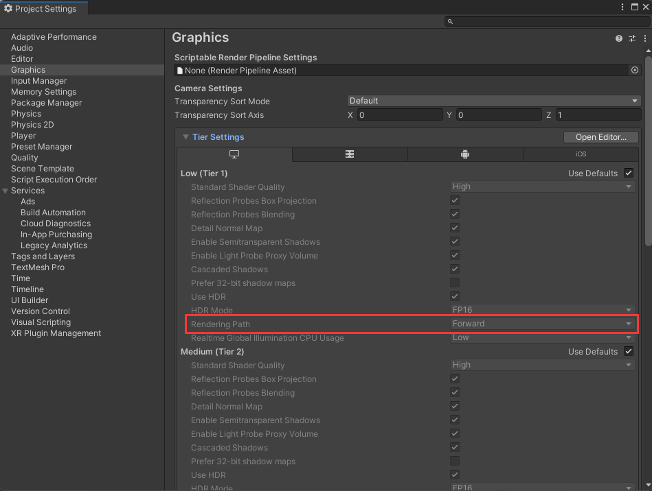

Lambert光照模型
Lambert光照模型
一、Lambert光照模型理论
在现实生活中，一个物体的颜色是由射进眼镜里的光线决定的。
当光线射到物体表面时，一部分被物体表面吸收，另一部分被反射。对于透明物体而言，还有一部分光会透过物体，产生透射光。
被物体吸收的光会产生热量，所以只有反射光和透射光才能进入人眼，从而产生视觉效果。
物体表面的光照颜色由入射光、物体材质以及材质和光的交互规律觉定。
Lambert光照模型可以比较真实地还原粗糙物体表面与光的交互行为，且计算效率非常高，被广泛使用。
当光线照射到物体表面粗糙的物体，例如：石灰墙壁、纸张等，光线会向各个方向等强度的反射，即光的漫反射现象（Diffuse）。
漫反射满足Lambert定律：反射光线强度与表面法线和光源方向之间的夹角呈正比。产生漫反射的物体表面称为理想漫反射体。

Lambert光照模型计算公式：
$C_{diffuse}=(C_{light} \cdot M_{diffuse})saturate(n \cdot l)$
其中：
·$C_{diffuse}$：物体的漫反射颜色
·$C_{light}$：入射光线的颜色
·$M_{diffuse}$：物体材质的漫反射颜色
·$n$：物体表面法线
·$l$：物体指向灯光的方向
根据点积数学运算可知：表面法线与灯光方向之间的夹角越小，点积结果越大，漫反射越强。即当灯光方向与表面法线夹角为 0°，漫反射强度达到最大值；相反，当灯光方向与表面法线夹角为90°，漫反射强度达到最小值。
同时为了避免负值的出现，使用CG数学函数saturate（）将点积结果截取到[0,1]的区间范围内。
二、在Shader中获取灯光变量
灯光参数如何传递给Shader取决于当前Unity项目使用的渲染路径（Rendering Path），以及Shader中用于灯光模式的Pass Tag。
依次点击Edit->Project Settings->Graphics。

从图中可知，Unity默认将Rendering Path设置成了Forward。
| 变量 | 类型 | 说明 |
|---|---|---|
| _LightColor0 | fixed4 | 灯光的颜色乘上亮度，在UnityLIghtingCommon.cginc中被声明 |
| _WorldSpaceLightPos0 | float4 | 平行光属性：float4（世界空间灯光方向，0），其他灯光属性：float4（世界空间灯光位置，1） |
| _LightMatrix0 | float4x4 | 世界到灯光的变换矩阵，用于采样灯光cookie和衰减贴图，在AutoLight.cginc中被声明 |
| unity_4LightPosX0, unity_4LightPosY0, unity_4LightPosZ0 |
float4 | 前四个非重要点光在世界空间的位置，只能用于ForwardBasepass |
| unity_4LightAtten0 | float4 | 前四个非重要点光的衰减系数，只能用于ForwardBasepass |
| unity_LightColor | half4[4] | 前四个非重要点光的颜色,只能用于ForwardBasepass |
| unity_WorldToShadow | float4x4[4] | 世界岛阴影的变换矩阵，一个用于聚光灯矩阵，最多4个用于串联平行光的矩阵 |
三、基于Lambert光照模型的Shader
1 | Shader "Custom/Lambert" |
代码讲解：
（1）灯光颜色变量：在Shader中使用了灯光颜色变量_LightColor0，所以需要声明UnityLightingCommon.cginc。
（2）法线向量：使用内置的appdata_base结构体输入到顶点着色器。因为计算光照时要保证物体的法线向量和灯光的方向向量在同一空间，而输入到着色器顶点的法线向量是在模型空间中，灯光的方向向量在世界空间中，所以需要将法线向量变换到世界空间，并进行标准化处理得到 $n$。
1 | //法线向量 |
（3）灯光向量：世界空间平行光方向_WorldSpaceLightPos0标准化后得到 $l$。
1 | //灯光方向向量 |
渲染效果图：

四、Half-Lambert光照模型
Lambert光照模型有一个明显的缺点，就是物体背光面完全是黑的，看不到任何表面细节。
于是则有了一种基于Lambert进行算法优化的Half-Lambert光照模型。
Half-Lambert光照模型的计算公式：
$C_{diffuse}=(C_{light} \cdot M_{diffuse})[0.5(n \cdot l)+0.5]$
表面法线和光照方向向量的点积并不是直接截取到区间[0,1]，而是先乘0.5，将数值区间缩小到[-0.5,0.5]，然后加上0.5，将区间移动到[0,1]，这样光线强度就会逐渐从最亮的迎光面逐渐过渡到最暗的背光面。
只需要修改vert函数部分代码即可：
1 | v2f vert(appdata_base v) |
二者渲染图对比：


相比之下，Half-Lambert背部多了许多细节，不是全黑的了，并且过渡更加柔和自然。